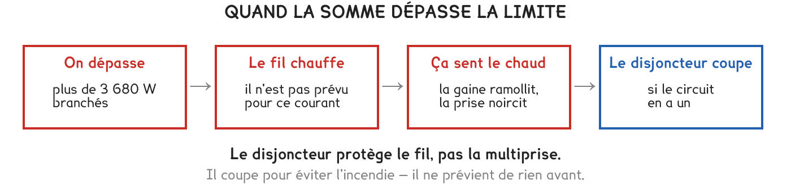

CAP Électricien · 1re année
Le fil chauffe d'abord, le disjoncteur coupe ensuite. Entre les deux, la prise a le temps de noircir.
2 exercices · 4 items d'entraînement · 2 figures
Savoirs travaillés
Quand la somme des puissances dépasse la limite, les choses arrivent dans cet ordre : on branche trop, le fil chauffe, la prise noircit, et seulement ensuite le disjoncteur coupe.

Ce qui chauffe, c’est le fil, pas l’appareil. Un fil trop petit pour le courant qui le traverse s’échauffe sur toute sa longueur — y compris à l’endroit où il est enroulé derrière un meuble, là où la chaleur ne s’évacue pas.
Le disjoncteur n’a pas sauvé la prise noircie : il a sauvé le reste. Une prise qui a chauffé une fois garde une trace, et elle chauffera plus vite la fois suivante. Elle se remplace, elle ne se nettoie pas.
Le disjoncteur protège le fil, pas les appareils. Il est au bout de la chaîne : il coupe après que le fil a chauffé, jamais avant.
Deux multiprises l’une dans l’autre ne doublent rien. Les deux sont derrière la même prise murale : la limite reste 3 680 W pour l’ensemble.
| Appareil | lampe | chargeur | enceinte | console | radiateur | sèche-cheveux | bouilloire |
|---|---|---|---|---|---|---|---|
| Puissance | 9 W | 10 W | 30 W | 200 W | 1 000 W | 1 800 W | 2 200 W |
Série · CN
Exercice · CN
Tout est branché en même temps. Combien de watts faut-il retirer pour repasser sous la limite de la multiprise ?
Exercice · CN
Une multiprise vendue en supermarché n’a aucune protection à elle. En une phrase : qui protège le circuit, et à quel moment ?
Le garde-fou existe, mais il arrive tard. La seule protection qui agit avant, c’est le calcul : additionner avant de brancher.
Ce site rappelle la méthode. Aucun corrigé, rien n'est noté.